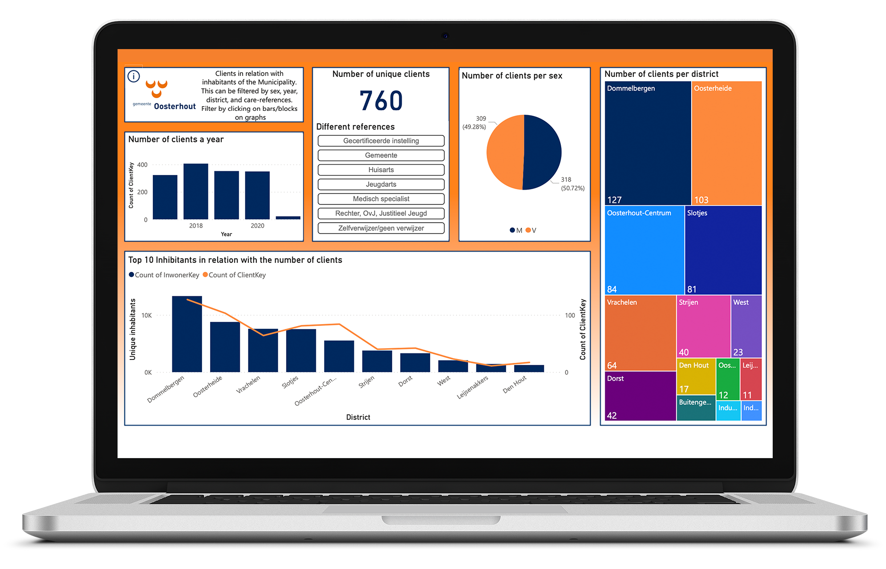

Fully Responsive
Youthcare Dashboard
In collaboration with the municipality of Oosterhout, a responsive dashboard with machine learning techniques is realized.
One of the key responsibilities of the municipality of Oosterhout is youth care. While Dutch children are among the happiest and healthiest in the world, there are still many children that need extra support and care. My dashboard enhanced the digital transformation of this process.
